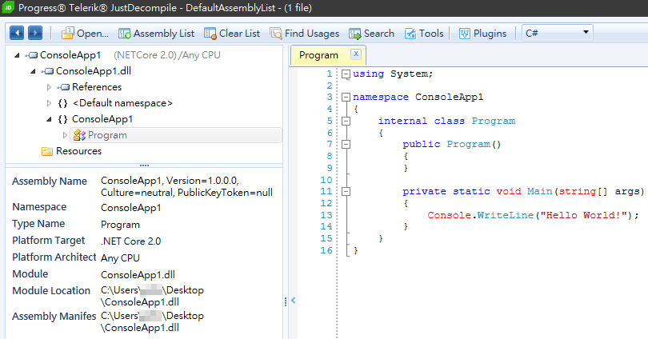

混淆器、反混淆器、反組譯器
一開始我以為 .Net Reflector 跟 Dotfuscator 是矛與盾的關係，其實不全然，
deobfuscator(反混淆)與obfuscator(混淆)才是矛與盾的關係。
以下是個人用過的工具列表
一、混淆器
Dotfuscator
此為preemptive出的混淆器，其有分Dotfuscator Professional版本與Dotfuscator Community Edition 版本，
Dotfuscator Professional版為3-14天的試用期，目前版本為4.25.0，
而Dotfuscator Community Edition 版(for free)目前版本為5.19.2.3356。
如何使用請參考[Tool]使用PreEmptive的Dotfuscator來做模糊化
二、反混淆器
三、反組譯器
1、.Net Reflector
此為red-gate出的反編譯程式，可以將.NET Framework為基礎開發出來的DLL或EXE文件，
反編譯為原始程式的工具軟體。其有分STANDARD版本與VSPRO版本，
STANDARD版為獨立安裝程式，用來讀取DLL或EXE檔並查看程式結構，
試用版為14天，目前版本來到了9.0.1.374；
VSPRO版為鑲嵌在Visual studio上面，具有偵錯、動態編譯等功能。
如何使用請參考[.NET]使用 .NET Reflector + Reflexil 來調整 .NET 組件的程式
2、JustDecompile
Telerik 出的 JustDecompile 反組譯工具檔案輕巧方便，沒有太複雜的設定，
最重要的是他是 open source 免費的。

參考資料：
PreEmptive Protection - Dotfuscator 5.35 Community Edition User Guide